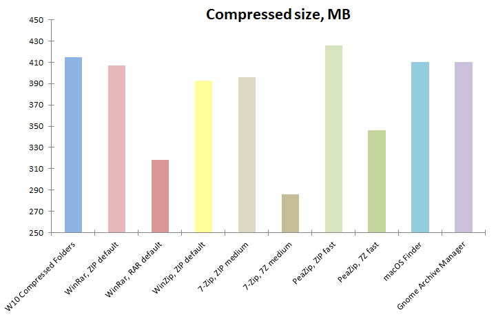

Software
settings
Benchmarks
are conducted
on Windows 10 2009 64 bit using 64 bit versions of:
- 7-Zip 19.00
- Bandizip 6.25
- PeaZip 7.2.0
- WinRar 5.8
- WinZip 24
All applications are tested using default,
out-of-the-box compression settings for the selected archive format.
No cryptography option is set, since encryption impact on performances
is out of the scope of
this benchmark.
|
Hardware
settings
Notebook with Intel Core i7-8565U CPU, 4
physical cores with hyper-threading (8 logical cores), 8 GB RAM
System disk 512 GB PCIe NVMe SSD, NTFS filesystem
External disks 4TB 5400 RPM HDD USB3, NTFS filesystem
|
|
|
|
Archive
formats compared in this benchmark
- 7Z file
format
popular Open Source archive format
introduced by 7-Zip, providing higher compression ratio than RAR, and
now supported by many archive managers
- ARC file
format
Open Source archive format
introduced by FreeArc and read / write supported by PeaZip, written
ground up for high
compression ratio and advanced features like strong encryption and
error recovery
- RAR file
format
(RarLabs RAR5 revision) proprietary archive format providing
better
compression that ZIP plus advanced features like error recovery;
due its proprietary nature it can be written only by WinRar, and it is
supported by third parts archivers only for extraction
- ZIP file
format
widely used archive format, read / write supported by most file manager
and archive manager
utilities, tested with Deflate and with BZip2
compression algorithm (available as preset in PeaZip from Add button
dropdown menu)
- ZIPX
file format
introduced by
WinZip to improve compression ratio over ZIP and to introduce other
modern features
- ZPAQ format,
computing intensive algorithm providing very high compression ratio,
available as preset in PeaZip from Add button
dropdown menu, both at normal and ultra compression level settings.
|
Input data
Benchmark input contains 42 files in 4 directories for total 303 MB
(318.000.857 bytes), composed by well known reference files
representative of different data structures, widely used for
compression
benchmarks:
|
|
|
Benchmark methods
Benchmark
input data is saved to system disk (PCIe SSD) and compressed to system
disk, same partition, separate directory; the resulting archives are
then extracted to
separate directory on same (system) disk/partition.
Then, same operations are repeated on a slower mechanical disk, where
hard disk read / write speed may become a limiting factor: benchmark
input data is saved to external disk (USB3 HDD) and
compressed to same external disk, same partition, separate directory;
resulting archives
are extracted to
separate directory on same (external) disk/partition.
Each compression and extraction test is repeated 10 times to get an
average value; size is expressed in MB, time in seconds.
Each archiving utility performance is tested working with zip and at
least another
archive format.
For pure compression formats (Brotli and Zstandard) requiring to
consolidate the multiple input files of the benchmark into a single TAR
file, are shown both pure compression and extraction speeds - which are
the actual speed for a single file input, and are the values reported
in the graphs - and, in brackets (), the total operation time taking in
account tar / untar operations, with performance penalty being almost
negligible on fast SSD disk.
Benchmark results
table, the lower the better for all columns
| Utility |
Compression
SSD (sec)
|
Compression
HDD (sec)
|
Archive
size (MB) |
Compression
ratio
|
Extraction
SSD (sec) |
Extraction
HDD (sec) |
| PeaZip,
ZIP |
12,1 |
16,0 |
97,70 |
32,24% |
1,6 |
13,4 |
PeaZip,
Brotli
|
3,3 (3,5)
|
8,5 (19,5)
|
100,00 |
33,00% |
0,9 (1,1)
|
11,7 (22.5)
|
| PeaZip,
Zstd |
1,0 (1,2)
|
4,5 (15,5)
|
99,20 |
32,74% |
0,6 (0,8)
|
9,8 (20,6)
|
PeaZip,
ZIP/Bzip2 fast
|
12,6 |
14,5 |
83,00 |
27,39% |
4,5 |
19,8 |
| PeaZip,
7Z |
39,6 |
42,2 |
73,60 |
24,69%
|
1,0 |
13,0 |
| PeaZip,
ARC |
17,2 |
18,3 |
71,70 |
23,66%
|
7,1 |
16,8 |
| PeaZip,
ZPAQ |
37,2 |
40,6 |
68,50 |
22,61%
|
26,8 |
32,8 |
PeaZip,
ZPAQ ultra
|
354,0 |
360,0 |
57,60 |
19,01%
|
356,0 |
364,0 |
| 7-Zip,
ZIP |
11,9 |
16,0 |
97,70 |
32,24%
|
1,2 |
13,1 |
| 7-Zip,
7Z |
38,0 |
40,3 |
73,60 |
24,29%
|
0,9 |
13,0 |
| WinRar,
ZIP |
3,0 |
6,0 |
100,00 |
33,00%
|
1,0 |
76,6 |
| WinRar,
RAR |
13,8 |
25,5 |
80,40 |
26,53%
|
1,0 |
18,9 |
| Bandizip,
ZIP |
3,2 |
7,0 |
101,00 |
33,33%
|
2,0 |
13,4 |
| Bandizip,
7Z |
63,4 |
69,7 |
72,80 |
24,03%
|
5,2 |
17,0 |
| WinZip,
ZIP |
20,5 |
26,0 |
97,10 |
32,05%
|
2,0 |
12,3 |
| WinZip,
ZIPX |
34,7 |
37,2 |
70,70 |
23,33%
|
46,2 |
47,4 |
Compression ratio results:
what application compresses better
Compressing
data to ZIP format,
which is read / write supported by all all archiving applications
tested in this benchmark, all utilities reach a compression ratio in
the order of 33%, with WinZip reaching best compression for ZIP archive
at 97,10MB but at the cost of much slower compression speed.
7-Zip and PeaZip (which uses the same optimized Deflate algorithm of
7-Zip) attains good compression in zip format with 97,70MB at
intermediate speed, while
WinRar and Bandizip reach the lowest compression at 100MB and 101 MB
respectively, but with significantly higher compression speed.
An exception is ZIP compressed with BZip2
method (a preset available in PeaZip) which reduces input size down to
83 MB, result much closer to strong compression formats (as rar and 7z)
than to ZIP files compressed with Deflate method.
Brotli and Zstandard (both at default
compression level 3) provides compression ratio in the same range of
ZIP, comparing favourably in terms of speed.
Compressing in formats alternative to ZIP allows all tested archiving
applications to reach a better compression ratio, roughly grouped at
25%.
WinZip reaches a good compression ration on the test data with ZIPX format creating a 70,70MB
output archive, followed by PeaZip with ARC format at 71,70MB - with ARC
outperforming 7Z and ZIPX in terms of compression speed, taking
only about half the time.
In 7Z format both 7-Zip and
PeaZip obtain a
73,60 MB archive with comparable times, while BandiZip produces
a marginally smaller output at 72,80 MB taking about twice the time.
WinRar with RAR format (RAR5
revision) creates the largest output file of this sub-group, 80,40MB,
with good archive creation speed, even faster than ARC.
Best compression is
reached by PeaZip with ZPAQ format,
the normal compression level preset reduces benchmark data size down to
68,50 MB (22,61% compression ratio) with a speed comparable to 7Z.
ZPAQ ultra compression level scores the minimum output size of the
benchmark, 57,60 MB (19,01%, the only compression ratio below 20%), but
the extreme compression comes at the cost of a 10x increase in
computing time.

Compression speed results:
what is the fastest application
WinRar
and BandiZip score the lowest compression times in ZIP format
(although producing a larger ZIP archive), with the speed advantage
being more
evident on the fastest solid state disk.
7-Zip and PeaZip employ longer time but the optimized Deflate
algorithm creates a more compressed ZIP archive, however WinRar with
RAR format and PeaZip both with ZIP/BZip2 and with ARC formats produce
significantly smaller
output with only marginally slower compression.
The compression speed result of BZip2 algorithm is especially
interesting because it scales very well on multicore architectures, and
in benchmark CPU (Intel i7-8565U) it approaches the speed of Deflate
algorithm providing significantly better compression ratio (27,39%
instead of 32,24%); BZip2 speed result is marginally faster than RAR
and ARC, and much more faster than 7Z and ZIPX.
Brotli speed is comparable with fastest ZIP implementations, and
Zstandard (with generic multithreading option activated by default by
PeaZip) scores the highest compression speed, significantly faster than
any other compressor tested in the benchmark.
WinZip ZIP compression is slower than RAR and ARC, with only a marginal
compression ratio increase on ZIP archives group but far worse
compression than any of the non-ZIP archives.
ZIPX (WinZip), ZPAQ (PeaZip), and 7Z (7-Zip, PeaZip) compression
algorithms are comparable for speed, and significantly
slower than RAR and ARC, with Bandizip 7Z
compression being slower that other 7Z implementations and the second
slowest performance of the benchmark before ZPAQ ultra level.

Extraction speed results:
what is the fastest application
Decompression
results usually faster than creation or archives, with
few
exceptions.
The difference in speed is especially noticeable on the
faster SSD disk, while slower mechanical HDD masks this difference to
some extent, which hints that compression stage is more CPU-heavy and
mainstream algorithms are optimized for extraction (that in most user
cases, i.e. content distribution, is more common and performed more
often than compression).
Extraction times of ZIP, RAR and 7Z archives is quite tightly packed
for all file archivers utilities,
despising RAR and 7Z compression being significantly slower than ZIP -
with exception of Bandizip extraction of its 7Z archive which is the
slowest
of this sub-group, a gap more evident on faster SSD disk.
Another very unusual data point is WinRar resulting very slow in
extracting its ZIP file on the mechanical disk while in all other test
the software result performing very well - to verify the correctness of
the data, the very same archive was tested for integrity, and extracted
with other utilities without producing the same unusual slow result.
ZIP/BZip2 extraction is significantly slower than ZIP/Deflate, and also
compairs unfavourably with format like 7Z and RAR (but is faster than
ARC and ZIPX).
Brotli and Zstandard features the slightly fastest decompression speeds
of the group.
PeaZip ARC extraction performed more slowly than 7Z extraction,
reversing the results from compression performances
Also ZPAQ decompression compares unfavorably with mainstream archive
formats, being quite similar to compression speed.
WinZip ZIPX
features significantly slower decompression performance taking over 6
times
ARC on SSD, and almost twice slower than ZPAQ normal, and surpass only
the extraction speed of ZPAQ ultra which scores an order of magnitude
slower than competitors.

Bonus test: drag and
drop extraction speed
Extracting
content from archives by drag and drop is a very common
operation: PeaZip features an optimized
drag & drop extraction mechanism, which extracts the data
directly into the intended output path.
This improves security (no temporary data is written out of the
intended path) but also, in some cases, performances, as the data would
otherwise be written twice to be moved to final output path unless it
is on the same partition of the input.
In this test, the benchmark input data is compressed to ZIP archive
with 7-Zip, and copied on external USB3 4TB 5400 RPM mechanical HDD.
The archive is opened in each one of the archivers, and extracted by
drag and drop to a second external USB3 4TB 5400 RPM mechanical HDD,
taking in account time for decompression and for moving the data to the
final position (test is repeated 10 time for each application to get an
average value).
| Utility |
Drag
& drop zip file extraction speed (sec) |
| PeaZip |
13,6 |
| 7-Zip |
17,0 |
| WinRar |
16,9 |
| Bandizip |
17,0 |
| WinZip |
15,5 |
7-Zip, Bandizip and Winrar are tightly packed around very similar
performances of 17 seconds, while PeaZip fast drag and drop
implementation shows a clear performance advantage in this scenario
completing the extraction in 13,6 seconds. WinZip provides an
intermediate performance at 15,5 seconds.
It is not easy, if even possible, to define what is the best performing
application in this benchmark, as all tested apps supports multiple
archive formats fulfilling different needs for different user cases at
best. Let see results in detail:
7-Zip, PeaZip
and WinZip lacks a fast ZIP compression
as featured in WinRar and Bandizip (with
WinZip being the slowest), but provides marginally better compression
ratio than faster applications, and zip decompression falls in the same
range for all tested utilities.
To address this shorthcoming, PeaZip supports Brotli and Zstandard, both well capable to
compete favourably with fastest Deflate implementations, with Zstandard
providing by far the fastest
compression performance of the benchmark, even taking in account
the extra time overhead for PeaZip to transparently add multiple inputs
to TAR archive before compression.
Also, PeaZip features as pre-set ZIP/BZip2
compression, that gets close to high compression formats but on modern
multicore machines is almost as fast as classic ZIP/Deflate for
compression (even if not for decompression).
WinRar's RAR format provides
significantly better-than-zip compression running only marginally
slower than 7-Zip's optimized Deflate (and faster than WinZip's ZIP),
and keeps decompression as fast as for zip.
7Z format
provides
even better compression at cost of slower speed than rar, but
decompression is as fast as for zip and rar, making 7Z an excellent
choice for content distribution case of use, where both reducing the
content size as much as possible and allowing fast extraction are
desired qualities. Bandizip produced marginally smaller 7Z archive than
7-Zip and PeaZip at cost at much slower compression and decompression.
In this test PeaZip with ARC outperforms
7Z results for all utilities in terms of compression ratio and
compression speed, but falls short with slower decompression.
WinZip with ZIPX fared well in
compression ratio and kept compression speed reasonable (a bit faster
than better results for 7Z), but extraction is extremely slow even on
fast SSD (probably being CPU-limited by a very heavy algorithm
implementation) so use of this format may be unpractical for general
purpose.
With ZPAQ PeaZip provided the
best compression
ratio, with compression times comparable to 7Z (but slower
extraction) at normal compression preset, and even superior compression
at ultra preset.
Final recommendations
ZIP
remains the format of choice if fast
compression and compatibility are
the main
concerns, with WinRar and Bandizip providing faster ZIP compression
even
if at the cost of losing some compression ratio compared to other
utilities
Anyway, modern algorithms as Google's Brotli and Facebook's
Zstandard are becoming viable alternatives providing comparable
compression ratio at higher speed - especially Zstandard, with
multithreading parameter enabled, which performs very
well on multicore machines definitely outperforming all Deflate-based
compressors / decompressors.
RAR and 7Z formats
provides far better
compression ratio than zip increasing only compression time, not
decompression, making it a viable high performance alternative in every
user case where archive extraction occurs more often than archive
creation - i.e. for content
distribution.
In 7Z subgroup, 7-Zip and
PeaZip performs faster than
Bandizip at the cost of a marginally inferior compression ratio.
RAR format is proprietary and is supported for archive creation only by
WinRar - even if some archivers as PeaZip can create RAR archives this requires
WinRar being installed to use its binaries.
ZIP/BZip2 provides good compression ratio, closer to RAR and 7Z than to
ZIP/Deflate, and also provides acceptable compression speed, but lags
behind in terms of decompression speed; it may still be a good choice
where usually more data gets compressed than extracted, i.e. backup
tasks.
Also, ZIP/BZip2 may not be supported by some extractors, notably
Compressed Folders utility integrated in Windows.
Even better
compression
ratio could be reached using ARC of ZIPX, or
tweaking 7Z to maximum compression settings, or using algorithms as
BCM, but maximum
possible compression ratio is reached by PAQ family compressors
(which are multiple times winner of Hutter
Prize).
PeaZip supports PAQ, LPAQ and ZPAQ, with ZPAQ at normal compression
level being available as preset an competing in the range of slow (but
perfectly usable for general purpose archiving) algorithms as 7Z / ZIPX.
ZPAQ with ultra preset provided by far the best compression of this
benchmark, significantly outperforming even other algorithms of same
family, reducing the 303 MB input to 57,60 MB (19,01% compression
ratio): for reference, PeaZip using LPAQ8 reduces the size of
benchmark input data down to 64,40MB (21,25%) in around 4 minutes, and
with PAQ8O compresses to 60,50 MB (19,97%) in about 50 minutes - a
breakthrough being needed (either in term of
raw computing power or algorithm / implementation efficiency) in order
to bring performances of PAQ family at highest compression settings in
the range of general purpose usage.ù
Verdict
For users needing maximum
compatibility with recipients using different archive managers,
the best choice is ZIP format, in which WinRar and BandiZip provides
best compression speeds, even if PeaZip and 7-Zip provides marginally
better compression ratio.
For users needing maximum compression
speed, the clear winner here are Brotli and Zstandard, both
supported by PeaZip, which is the best choice in this regard.
For maximum compression ratio, WinRar's RAR format is faster but
compresess less than 7Z format in PeaZip and 7-Zip, and ZPAQ format
supported by PeaZip provides even stronger compression, placing at top
in this category.
Synopsis: Compression
benchmark. What is the overall best application between 7-Zip,
BandiZip, PeaZip, WinRar, WinZip for general purpose archiving and
compression in different formats. What is the application providing
best compression. What is the fastest application. What software
extracts / decompress faster. Conclusion about file archivers
performances comparative.
PeaZip > Compression
benchmark > 7-Zip, PeaZip, WinRar, WinZip comparison
|
|